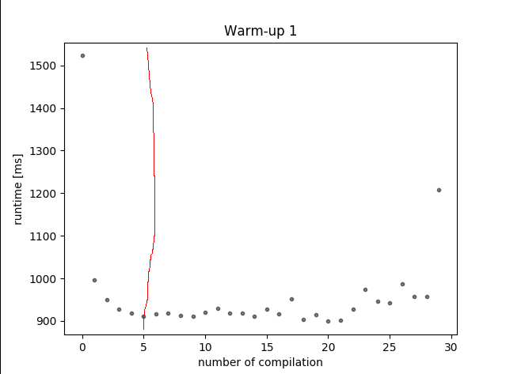
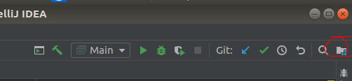

Warm up se dela tak ze kazdy program pustis.. treba na 30 iteraci, plotnes si data a pockas az se to tak nejak ustaly ty casy, tady je plotter muj na to :D pplt.py v mem pripade je warmup v 5. iteraci
V IDEAe udelat tohle z tech obrazku pod timhle textem, potom dat do root slozky runner.py a pustit, vygeneruje se dat.out a tam sou dataaa ez pz a potom hura pocitat, mam na to pripraveny prvnivzorec.py
